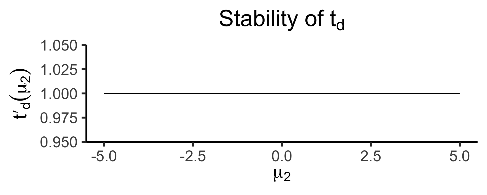
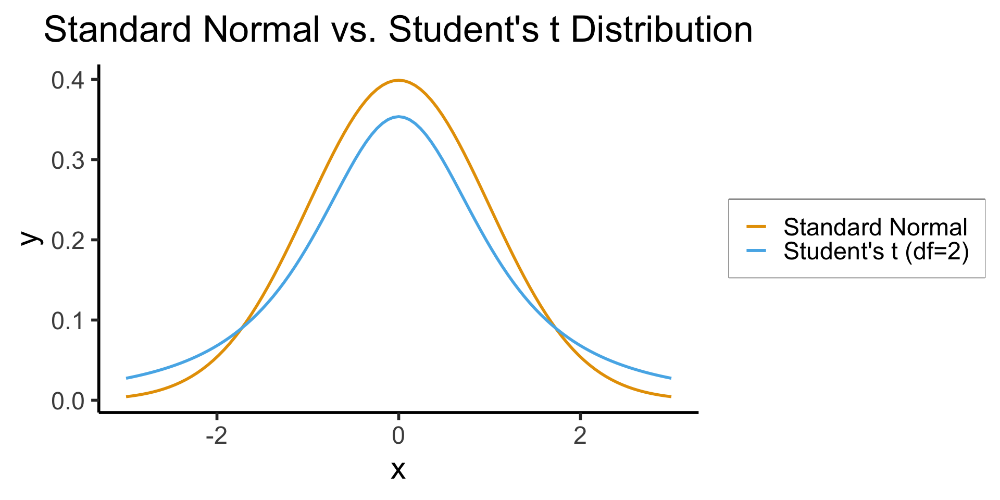
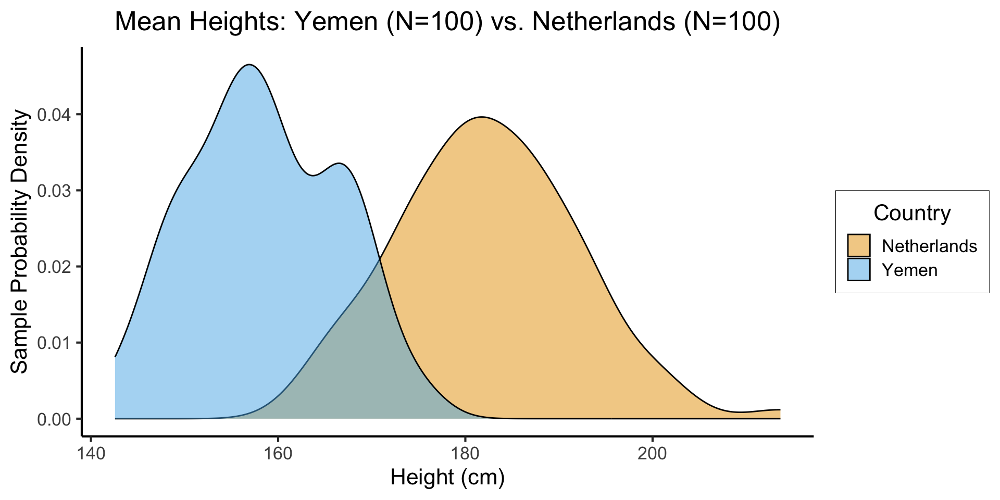

Code
source("../_globals.r")DSAN 5100: Probabilistic Modeling and Statistical Computing
Section 03
source("../_globals.r")\[ \DeclareMathOperator*{\argmax}{argmax} \DeclareMathOperator*{\argmin}{argmin} \newcommand{\bigexp}[1]{\exp\mkern-4mu\left[ #1 \right]} \newcommand{\bigexpect}[1]{\mathbb{E}\mkern-4mu \left[ #1 \right]} \newcommand{\convergesAS}{\overset{\text{a.s.}}{\longrightarrow}} \newcommand{\definedas}{\overset{\text{def}}{=}} \newcommand{\definedalign}{\overset{\phantom{\text{def}}}{=}} \newcommand{\eqeventual}{\overset{\mathclap{\text{\small{eventually}}}}{=}} \newcommand{\Err}{\text{Err}} \newcommand{\expect}[1]{\mathbb{E}[#1]} \newcommand{\expectsq}[1]{\mathbb{E}^2[#1]} \newcommand{\fw}[1]{\texttt{#1}} \newcommand{\given}{\mid} \newcommand{\green}[1]{\color{green}{#1}} \newcommand{\heads}{\outcome{heads}} \newcommand{\iid}{\overset{\text{\small{iid}}}{\sim}} \newcommand{\lik}{\mathcal{L}} \newcommand{\loglik}{\ell} \newcommand{\mle}{\textsf{ML}} \newcommand{\nimplies}{\;\not\!\!\!\!\implies} \newcommand{\orange}[1]{\color{orange}{#1}} \newcommand{\outcome}[1]{\textsf{#1}} \newcommand{\param}[1]{{\color{purple} #1}} \newcommand{\pgsamplespace}{\{\green{1},\green{2},\green{3},\purp{4},\purp{5},\purp{6}\}} \newcommand{\prob}[1]{P\left( #1 \right)} \newcommand{\purp}[1]{\color{purple}{#1}} \newcommand{\spacecap}{\; \cap \;} \newcommand{\spacewedge}{\; \wedge \;} \newcommand{\tails}{\outcome{tails}} \newcommand{\Var}[1]{\text{Var}[#1]} \newcommand{\bigVar}[1]{\text{Var}\mkern-4mu \left[ #1 \right]} \]
Today’s Planned Schedule:
| Start | End | Topic | Recording | |
|---|---|---|---|---|
| Lecture | 12:30pm | 1:00pm | Types of Hypotheses → | |
| 1:00pm | 1:30pm | Chi-Squared Test of Independence → | ||
| 1:30pm | 2:00pm | Testing Hypotheses About Proportions → | ||
| Break! | 2:00pm | 2:10pm | ||
| 2:10pm | 2:40pm | Hypothesis Testing Lab → | ||
| 2:40pm | 3:00pm | Student Presentation |
\[ \mathcal{H}: \mu_1 = \mu_2 \]
It is ambiguous what test statistic we should use to check this(!), since
\[ \begin{align*} \mu_1 = \mu_2 &\iff \mu_1 - \mu_2 = 0 \\ \mu_1 = \mu_2 &\iff \frac{\mu_1}{\mu_2} = 0 \end{align*} \]
(where we assume, for the second equivalence, that \(\mu_2 \neq 0\))
Our test statistic is some function \(t(\mu_1, \mu_2)\).
Let \(t_d(\mu_1, \mu_2) = \mu_1 - \mu_2\)
Let \(t_r(\mu_1, \mu_2) = \frac{\mu_1}{\mu_2}\)
How sensitive are these two ways of defining \(t\) to changes in the individual terms?
\[ t'_d(\mu_2) = \frac{\partial t^-(\mu_1, \mu_2)}{\partial \mu_1} = 1, \]
whereas
\[ t'_r(\mu_2) = \frac{\partial t^\div(\mu_1, \mu_2)}{\partial \mu_1} = \frac{1}{\mu_2} \]
library(tidyverse)── Attaching core tidyverse packages ──────────────────────── tidyverse 2.0.0 ──
✔ dplyr 1.1.2 ✔ readr 2.1.4
✔ forcats 1.0.0 ✔ stringr 1.5.0
✔ lubridate 1.9.2 ✔ tibble 3.2.1
✔ purrr 1.0.2 ✔ tidyr 1.3.0
── Conflicts ────────────────────────────────────────── tidyverse_conflicts() ──
✖ dplyr::filter() masks stats::filter()
✖ dplyr::lag() masks stats::lag()
ℹ Use the conflicted package (<http://conflicted.r-lib.org/>) to force all conflicts to become errorslibrary(latex2exp)
my_const <- function(x) 1
my_ratio <- function(x) 1/x
#data_df <- data_df |> mutate(
# z = my_diff(x, y)
#)
#print(data_df)
x_label <- TeX("$\\mu_2$")
td_title <- TeX("Stability of $t_d$")
td_label <- TeX("$t'_d(\\mu_2)$")
base_plot <- ggplot(data=data.frame(x=c(-5,5)), aes(x=x)) +
dsan_theme("quarter") +
labs(
x = x_label
)
diff_plot <- base_plot + stat_function(
fun = my_const,
linewidth = g_linewidth
) + labs(
title = td_title,
y = td_label
)
diff_plot
tr_title <- TeX("Stability of $t_r$")
tr_label <- TeX("$t'_r(\\mu_2)$")
ratio_plot <- base_plot + stat_function(
fun = my_ratio,
linewidth = g_linewidth
) + labs(
title = tr_title,
y = tr_label
)
ratio_plot
\[ \begin{align*} \widehat{\mu}(\mathbf{X}) = f(\mathbf{X}) &= \frac{1}{N}\sum_{i=1}^{N}X_i \\ \widehat{\sigma^2}(\mathbf{X}) = g(\mathbf{X}, \widehat{\mu}(\mathbf{X})) &= \frac{1}{N}\sum_{i=1}^N (X_i - \boxed{\widehat{\mu}(\mathbf{X})})^2 \\ &= \frac{1}{N}\sum_{i=1}^N\left(X_i - \boxed{\frac{1}{N}\sum_{j=1}^NX_j}\right)^2 \end{align*} \]
\[ \mathbb{E}[\widehat{\sigma^2}] = \cdots = \sigma^2 + \mathbb{E}[\varepsilon^2] - 2\varepsilon\mathbb{E}[X_i-\mu] = \sigma^2 + {\color{red}\varepsilon^2} \]
library(tidyverse)
my_normal <- function(x) dnorm(x)
my_st <- function(x) dt(x, 2)
ggplot(data=data.frame(x=c(-3,3)), aes(x=x)) +
stat_function(
aes(color='norm'),
fun=my_normal,
linewidth = g_linewidth
) +
stat_function(
aes(color='st'),
fun=my_st,
linewidth = g_linewidth
) +
dsan_theme("half") +
scale_color_manual(
"Distribution",
values=c('norm'=cbPalette[1],'st'=cbPalette[2]),
labels=c('norm'="Standard Normal",'st'="Student's t (df=2)")
) +
remove_legend_title() +
labs(
title = "Standard Normal vs. Student's t Distribution"
)
library(tidyverse)
library(infer)
nl_height_mean <- 182.535
nl_height_sd <- 8
yemen_height_mean <- 159.887
yemen_height_sd <- 8
N <- 100
nl_sample <- rnorm(N, mean=nl_height_mean, sd = nl_height_sd)
nl_df <- tibble(height=nl_sample, Country="Netherlands")
yemen_sample <- rnorm(N, mean=yemen_height_mean, sd = yemen_height_sd)
yemen_df <- tibble(height=yemen_sample, Country="Yemen")
data_df <- bind_rows(nl_df, yemen_df)
ggplot(data_df, aes(x=height, fill=Country)) +
geom_density(alpha=0.5) +
dsan_theme() +
#xlim(150,200) +
labs(
title = "Mean Heights: Yemen (N=100) vs. Netherlands (N=100)",
x = "Height (cm)",
y = "Sample Probability Density"
) +
scale_fill_manual("Country", values=c('Netherlands'=cbPalette[1], 'Yemen'=cbPalette[2]))
infer PackageIt’s easy to find resources on built-in t.test(), harder to find resources on newer, tidyverse-based t_test()! 😉
Syntax is t_test(df, formula, order, alternative)
order = c(pop1, pop2) \(\rightarrow H_0: \mu_1 - \mu_2 = 0\)
alternative = {"two-sided", "greater", "less"}
formula slightly trickier, but tldr is:
variable you're computing means for ~ variable splitting df into two populationsdata_df |> t_test(formula = height ~ Country, order = c("Netherlands", "Yemen"), alternative = "greater")# A tibble: 1 × 7
statistic t_df p_value alternative estimate lower_ci upper_ci
<dbl> <dbl> <dbl> <chr> <dbl> <dbl> <dbl>
1 19.3 191. 5.28e-47 greater 23.9 21.8 Inf
\[ \begin{align*} H_0: X_1 \perp X_2 &\iff \Pr(X_1 = v_1 \mid X_2 = v_2) = \Pr(X_1 = v_1) \\ H_A: X_1 \not\perp X_2 &\iff \Pr(X_1 = v_1 \mid X_2 = v_2) \neq \Pr(X_1 = v_1) \end{align*} \]
Now we can define the central quantities that the chi-squared test involves: the frequencies (i.e., unnormalized probabilities) of observations with certain (categorical) variable values:
\(f_{i,j}\): The number of observations for which \(X_1 = k_{1,i}\) (the \(i\)th value that \(X_1\) can take on) and \(X_2 = k_{2,j}\) (the \(j\)th value that \(X_2\) can take on).
Let \(f_{i,\cdot} = \sum_{j=1}^{K_2}f_{i,j}\) be the number of observations for which \(X_1 = k_{1,i}\), regardless of the value of \(X_2\) (hence we call this the marginal frequency of \(X_1 = k_{1,i}\)).
Similarly, let \(f_{\cdot, j} = \sum_{i=1}^{K_1}f_{i,j}\) be the marginal frequency with which songs have \(V_2 = k_j\). \(f_{\cdot, 2}\), for example, represents the number of songs for which the valence value is at level 2 (Moderate), regardless of its artist.
\[ Q = \sum_{k_1=1}^{K_1}\sum_{k_2=1}^{K_2}\frac{\left(f_{k_1,k_2} - \frac{f_{k_1,\cdot}f_{\cdot,k_2}}{N}\right)^2}{\frac{f_{k_1,\cdot}f_{\cdot, k_2}}{N}} \]
We can compute this test statistic (somewhat laboriously) in R as follows: first let’s create variables representing the supports \(\mathcal{R}_{X_1}\) and \(\mathcal{R}_{X_2}\) for our two random variables \(X_1\) and \(X_2\):
#(L1 <- sort(unique(artist_df$artist_name)))
#K1 <- length(L1)
# Here we set this manually, rather than using unique(), so we can obtain a specific ordering that we want
#(L2 <- c("more negative", "Moderate", "more positive"))
#K2 <- length(L2)1[1] 1# q_sum <- 0
# for (k1 in 1:K1) {
# artist_name_value <- L1[k1]
# artist_marginal_freq <- L1_marginal_freqs[k1]
# for (k2 in 1:K2) {
# valence_value <- L2[k2]
# valence_marginal_freq <- L2_marginal_freqs[k2]
# print(paste0("(",artist_name_value,", ",valence_value,")"))
# # Compute the frequency in this bin
# bin_df <- artist_df |> filter(artist_name == artist_name_value & valence_C == valence_value)
# print(nrow(bin_df))
# # And now, since we precomputed the marginal frequencies, we have everything we need!
# joint_freq <- nrow(bin_df)
# marginal_ratio <- (artist_marginal_freq * valence_marginal_freq) / N
# numer <- (joint_freq - marginal_ratio)^2
# denom <- marginal_ratio
# cur_q_val <- numer / denom
# q_sum <- q_sum + cur_q_val
# }
# }
# q_sumdchisq() function:#(test_df <- (K1 - 1) * (K2 - 2))
#dchisq(q_sum, test_df)And so, finally: this tells us that under the null hypothesis that artist_name and valence_C represent draws from independent random variables, the likelihood of obtaining our dataset, or a dataset with a more extreme test statistic, is about 0.00042, or 0.042%.
Therefore, if we are evaluating our hypothesis at the 5% confidence level (or 1% or even 0.1%, because this is a very low probability value/percentage), we conclude that we should reject the null hypothesis that artist name and valence are independent. Therefore (switching from a frequentist to a Bayesian interpretation, mercifully), we increase our degree of belief in the hypothesis that the valence of a song does depend upon the artist making the song.
This technical conclusion (which focuses only on the results of the statistical hypothesis test), combined with the Bayesian interpretation at the end, lets us say something about “what we’ve learned” about music:
\[ p_{post} = \frac{1}{2}\Pr(H_0) + \frac{1}{2}\text{Test Result} = \frac{1}{2}(0.1) + \frac{1}{2}(0) = 0.05. \]
From here onwards I drop the \((v)\) superscript for brevity, but remember that we’re always talking about \(\mu^{(v)}_i\): the population mean of a particular variable \(v\) in population \(i\)!↩︎